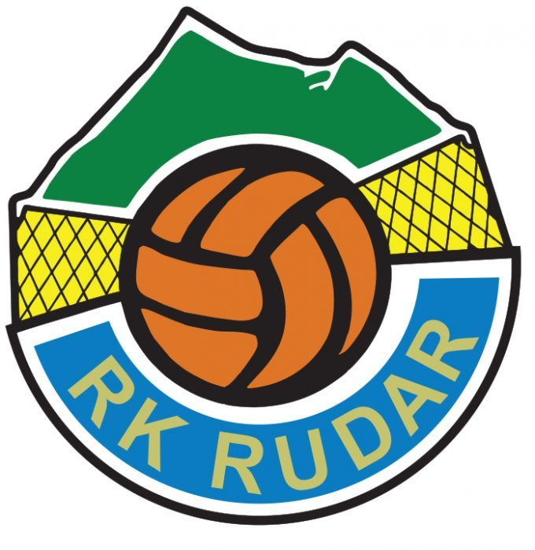

RK “Rudar” je u cijelosti amaterski klub, oslonac u igračkom kadru je na podmlatku iz vlastite omladinske škole.
Cilj: animirati djecu za bavljenje sportom, usaditi im ljubav prema istom te omogućiti i mlađim dobnim skupinama natjecateljsko bavljenje sportom.
U sklopu RK “Rudar” djeluje 5 mlađih uzrasnih kategorija sa stotinjak registriranih igrača.
O razvoju i napretku mladih igrača brine 5 trenera sa potrebnim kvalifikacijama HOO i KIF-a.
Povratak u Premijer ligu!
RK Rudar se vraća u Premijer ligu nakon samo godinu dana pauze!
U rukometnom svijetu ovih prostora RK Rudar je institiucija, klub kakav bi mnogi puno veći i bogatiji poželjeli imati.
Žive gotovo isključivo na igračima odraslima u njihovim mlađim kategorijama i takvi su, sa samo dva igrača izvana, izborili ulazak u elitni rang hrvatskog rukometa.
U vremenu kad u najvišem rangu hrvatskog nogometa na jednoj utakmici možete izbrojati navijače na prste jedne ruke, Rudar na gostovanja prati stotinu njihovih glasnih fanova.